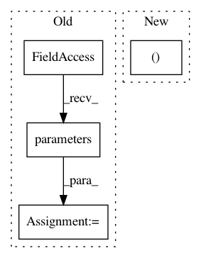

4888cb7a5299f7eed9214ddc70871dc05ea0f4d2,model/ft_ResNet50/train.py,,,#,298
Before Change
base_params = filter(lambda p: id(p) not in ignored_params, model.parameters())
optimizer_ft = optim.SGD([
{"params": base_params, "lr": 0.1*opt.lr},
{"params": model.model.fc.parameters(), "lr": opt.lr},
{"params": model.classifier.parameters(), "lr": opt.lr}
], weight_decay=5e-4, momentum=0.9, nesterov=True)
else:
ignored_params = list(map(id, model.model.fc.parameters() ))
ignored_params += (list(map(id, model.classifier0.parameters() ))
+list(map(id, model.classifier1.parameters() ))
+list(map(id, model.classifier2.parameters() ))
+list(map(id, model.classifier3.parameters() ))
+list(map(id, model.classifier4.parameters() ))
+list(map(id, model.classifier5.parameters() ))
//+list(map(id, model.classifier6.parameters() ))
//+list(map(id, model.classifier7.parameters() ))
)
base_params = filter(lambda p: id(p) not in ignored_params, model.parameters())
optimizer_ft = optim.SGD([
{"params": base_params, "lr": 0.1*opt.lr},
{"params": model.model.fc.parameters(), "lr": opt.lr},
{"params": model.classifier0.parameters(), "lr": opt.lr},
{"params": model.classifier1.parameters(), "lr": opt.lr},
{"params": model.classifier2.parameters(), "lr": opt.lr},
{"params": model.classifier3.parameters(), "lr": opt.lr},
{"params": model.classifier4.parameters(), "lr": opt.lr},
{"params": model.classifier5.parameters(), "lr": opt.lr},
//{"params": model.classifier6.parameters(), "lr": 0.01},
//{"params": model.classifier7.parameters(), "lr": 0.01}
], weight_decay=5e-4, momentum=0.9, nesterov=True)
// Decay LR by a factor of 0.1 every 40 epochs
exp_lr_scheduler = lr_scheduler.StepLR(optimizer_ft, step_size=40, gamma=0.1)
////////////////////////////////////////////////////////////////////////////////////////////////////////////////////////////////////////////
// Train and evaluate
// ^^^^^^^^^^^^^^^^^^
//
// It should take around 1-2 hours on GPU.
//
dir_name = os.path.join("./model",name)
if not os.path.isdir(dir_name):
os.mkdir(dir_name)
//record every run
copyfile("./train.py", dir_name+"/train.py")
copyfile("./model.py", dir_name+"/model.py")
// save opts
with open("%s/opts.yaml"%dir_name,"w") as fp:
yaml.dump(vars(opt), fp, default_flow_style=False)
// model to gpu
model = model.cuda()
if fp16:
model = network_to_half(model)
optimizer_ft = FP16_Optimizer(optimizer_ft, static_loss_scale = 128.0)
criterion = nn.CrossEntropyLoss()
model = train_model(model, criterion, optimizer_ft, exp_lr_scheduler,
After Change
if fp16:
//model = network_to_half(model)
//optimizer_ft = FP16_Optimizer(optimizer_ft, static_loss_scale = 128.0)
model, optimizer_ft = amp.initialize(model, optimizer_ft, opt_level = "O1")
criterion = nn.CrossEntropyLoss()
In pattern: SUPERPATTERN
Frequency: 3
Non-data size: 4
Instances
Project Name: layumi/Person_reID_baseline_pytorch
Commit Name: 4888cb7a5299f7eed9214ddc70871dc05ea0f4d2
Time: 2019-03-20
Author: zdzheng12@gmail.com
File Name: model/ft_ResNet50/train.py
Class Name:
Method Name:
Project Name: Microsoft/nni
Commit Name: 73b2221b5eb4fd21802e6bf41e21d5df8ef9bf2c
Time: 2019-11-22
Author: v-yugzh@microsoft.com
File Name: src/sdk/pynni/nni/nas/pytorch/darts/trainer.py
Class Name: DartsTrainer
Method Name: _compute_hessian
Project Name: rusty1s/pytorch_geometric
Commit Name: 50822819b664cd9d751d410a5eabd4cc0688311d
Time: 2020-11-03
Author: matthias.fey@tu-dortmund.de
File Name: examples/tgn.py
Class Name:
Method Name: